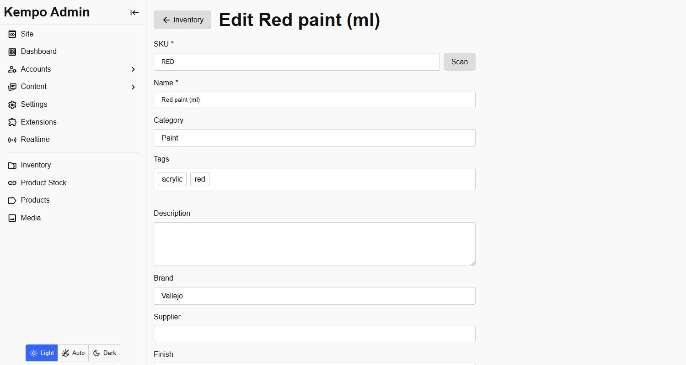
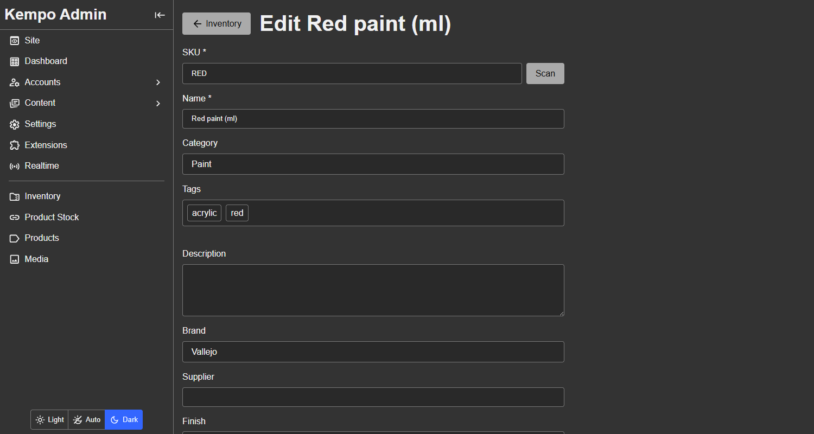
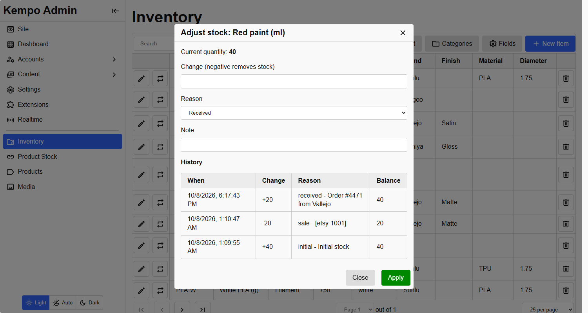
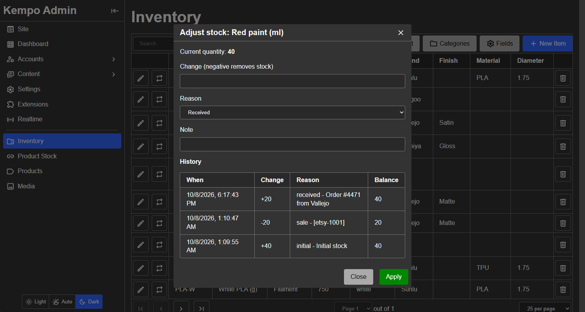

Items and stock
Items
An item has a SKU (unique), a name, a quantity, a description, an optional category, optional tags, and whatever custom fields you have set up.
Text is stored without leading or trailing spaces, and a value of only spaces counts as empty. That keeps FolkArt and FolkArt from becoming two brands.


An item's page. The fields below Description are custom fields: Brand and Supplier are for every item, Finish and Swatch only appear because this item is in the Paint category.Adding and editing an item are pages, not dialogs. A dialog closes with a stray tap outside it and takes everything entered with it, including photos taken with a camera. These pages keep your work, and while anything entered has not been saved, leaving the page (a link, the back button, a refresh) asks first. Create and add another starts a fresh, empty form for the next item.
An item a person manages can be edited freely. An item that another extension owns keeps its SKU, name and category fixed, and everything else, including stock, stays editable. See ownership.
Changing stock
Stock changes only through one action, the adjust button on an item's row, and not by editing the quantity. That is what keeps the history honest. Each change records a reason, an optional note, who made it, and the quantity afterwards.


Adjusting stock. The history below the form is every change ever made to the item, newest first, with the balance after each.- Enter a negative change to take stock out. A change that would take it below zero is refused, atomically, so two people can never take the same last unit.
- The reasons are received, sold, damaged, correction and other. An item's first stock is recorded as initial.
- Other extensions change stock through the same action, so their changes appear in the same history. The note can carry a reference, such as an order number.
The stock numbers are only for people who manage stock. See who sees stock counts.
Tags
Items and categories can be tagged with short labels such as acrylic, red, matte. Tags are always lower case, with spacing tidied, so Water-Based and water-based are one tag. An item has at most 30 tags, each up to 40 characters.
In the forms, type a tag and press Enter, Tab or comma to add it. Click a chip to remove it. Tags already in use are completed as you type.
- Search matches tags:
q=acrylic. - Exact filter:
?tag=redreturns items with that tag. Repeat it as a JSON list,?tag=["red","matte"], to require all of them. - An item does not inherit its category's tags. Searching a category's tag finds the category, and the category is how you reach its items.
GET /inventory/api/tagslists every tag in use with how many things have it.
Barcode scanning
The item form has a Scan button beside the SKU. Point the camera at a barcode and the SKU is filled in, with a warning if another item already uses it.
- It reads EAN-13/8, UPC-A/E, Code 128/39/93, ITF, Codabar, QR, Data Matrix, PDF417 and Aztec.
- Cameras only work on HTTPS pages (and
localhost). On a plain http address the dialog says so, rather than failing silently. - It uses the browser's own barcode detector where there is one (Chrome on Android) and otherwise a bundled copy of ZXing, so it works on iPhone and desktop too. Nothing is loaded from a CDN.
- A USB or Bluetooth barcode scanner needs no camera: it types the code into the SKU box and presses Enter, and in the item form that moves on to the name, not submitting the form.
The scanner is a reusable module for your own pages. See The barcode scanner.
kempo-inventory is open source under the MIT license. View it on GitHub, or report a problem.